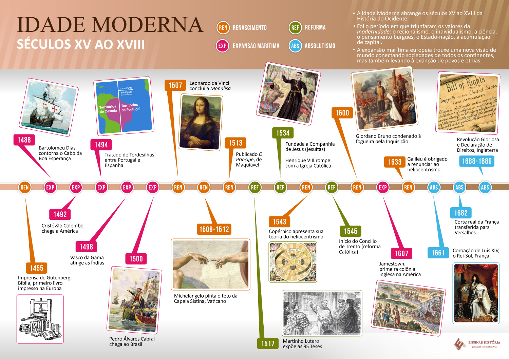

IDADE MODERNA
A Idade Moderna é o momento da história do século XV até XVIII e que está localizado temporalmente entre a Idade Média e a Idade Contemporânea.
Podemos afirmar seguramente que esse período foi considerado de intensas mudanças. Caracterizou-se por uma fase de grandes transformações, revoluções e mudanças na mentalidade ocidental, mudanças essas de ordem econômica, científica, social e religiosa, que balizaram o sistema capitalista.
As divergências conceituais quanto à origem e evolução daquele sistema (o capitalista), os historiadores apontam a conquista turca de Constantinopla ou a viagem de Vasco da Gama às Índias. Ou ainda, a viagem de Cristóvão Colombo às Américas como o marco dessa era.
De outra forma, poucos contestam o final desse período como sendo o dia 14 de julho de 1789, com o advento da Revolução Francesa.
De todo modo, a Idade Moderna representa a época quando encurtaram-se as distâncias, após os europeus se lançarem por mares nunca antes navegados, explorando e desvendando a natureza.
Dessa forma, os principais acontecimentos da Idade Moderna foram:
- As Primeiras Grandes Navegações
- O Renascimento
- A Reforma Religiosa
- O Absolutismo
- O Iluminismo
- Revolução Francesa

Economia na Idade Moderna
Após o desenvolvimento comercial a partir do século XV, o aumento da população, o crescimento das cidades e desenvolvimento das manufaturas, foi natural a superação da Idade Média.
Assim, foi se estruturando um sistema comercial que está no cerne do Capitalismo: o Mercantilismo.
Todas as colônias no ultramar possuíam o "exclusivo comercial", um rígido sistema de monopólio estruturado principalmente pela obrigatoriedade das rotas comerciais passarem pela metrópole.
Essa expansão marítima irá, de fato, restabelecer os alicerces econômicos da Europa. A rigor, os mecanismos econômicos mais usuais foram a prática do "Metalismo", onde a avaliação da riqueza de um reino baseada na quantidade de metais preciosos que este detinha.
Os "Pactos Coloniais", que determinavam as relações entre a metrópole e a colônia.
Os "Monopólios Comerciais", segundo os quais o rei definia os seus privilegiados e suas áreas.
E por fim, a Política de "Balanças Comerciais Favoráveis", segundo a qual era preciso exportar mais do que importar.
Política na Idade Moderna
Em termos políticos, devemos ressaltar que Absolutismo era forma de governo estabelecida. Nele, as palavras do Rei valiam enquanto lei e sua vontade e desejo eram uma ordem.
Essa forma de dominação era fundamentada pelas teorias de "predestinação divina", que apontavam o rei como eleito de Deus e textos laicos, como o de Nicolau Maquiavel, autor de “O Príncipe”.
Nessa obra, ele demonstra formas de governo aos príncipes para que eles pudessem manter-se soberanos no seu respectivos reinos.
Vale lembrar que em aproximadamente quatro séculos, os monarcas europeus observaram seu poder ruir por meio de várias revoluções liberais, até que a Revolução Francesa inicia o processo que derrubará definitivamente o Antigo Regime.
Sociedade na Idade Moderna
No tocante à Sociedade, esse foi um período caracterizado por significativas transformações e avanços tecnológicos que possibilitaram a globalização iniciada na Idade Moderna.
Podemos citar as "Grandes Navegações", que possibilitou, graças a descobertas e avanços já referidos, tal como o aperfeiçoamento do astrolábio e da bússola, de barcos mais resistentes para viagens marítimas e, mais adiante, do advento das máquinas à vapor.
Essas transformações possibilitaram um intenso acúmulo de capitais que permitiram ao continente europeu lançar-se na frente pela conquista.
Vale citar ainda que, o século XVIII também ficou marcado como sendo o ápice do espírito investigativo dos cientistas e filósofos iluministas, os quais, para além de inventar diversas máquinas, criarão muitas teorias sociais e científicas.
Além do "Iluminismo", a "Reforma Religiosa", liderada por Martinho Lutero, também fora uma grande revolução social, dando um duro golpe contra igreja católica, a qual reagiu com a Contrarreforma, um movimento para debelar o progresso da reforma religiosa.
Desta maneira, temos que destacar que os movimentos sociais como o Renascimento comercial e artístico, o Iluminismo e a Reforma Protestante mudaram o imaginário social daquele período e suas transformações são sentidas até os dias de hoje.
Exercícios logo abaixo, clique no botão para aparecer

(Enem 2021) Durante os anos de 1854-55, o governo brasileiro — por meio de sua representação diplomática em Londres — e os livre-cambistas ingleses — nas
colunas do Daily News e na Câmara dos Comuns — aumentaram à pressão Pela revogação da Lei Aberdeen. O governo britânico, entretanto, ainda receava que, sem um
tratado anglo-brasileiro satisfatório para substitui-la, não haverá nada Que impedisse os brasileiros de um dia voltarem aos seus velhos hábitos.
BETHELL, L. A abolição do comércio brasileiro de escravos. Brasília: Senado Federal, 2002 (adaptado).
As tensões diplomáticas expressas no texto indicam o interesse britânico em:
(Enem 2020) Desde o mundo antigo e sua filosofia, que o trabalho tem sido compreendido como expressão de vida é degradação, criação e infelicidade,
atividade vital é escravidão, felicidade social e servidão. Trabalho e fadiga. Na Modernidade, sob o comando do mundo da mercadoria e do dinheiro, a
prevalência do negócio (negar o ócio) veio sepultar o império do repouso, da folga e da preguiça, criando uma ética positiva do trabalho.
ANTUNES. R O século XX e 8 era da degradação do trabalho In SILVA. J P. (Org) Por uma sociologia do século XX. São Paulo: Annablume. 2007 (edaptado).
O processo de ressignificação do trabalho nas sociedades modernas teve início a partir do surgimento de uma nova mentalidade, influenciada pela: